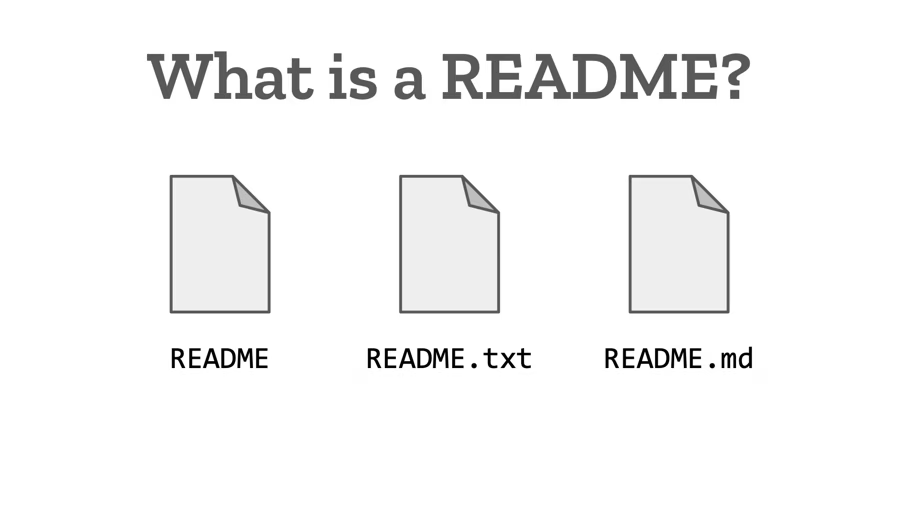
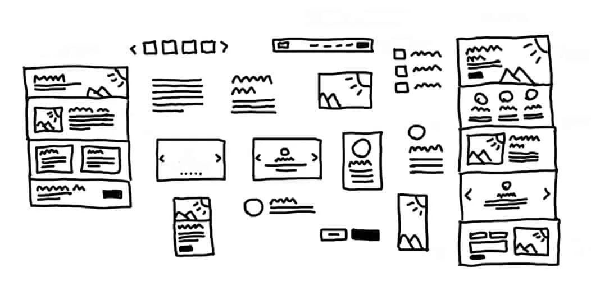
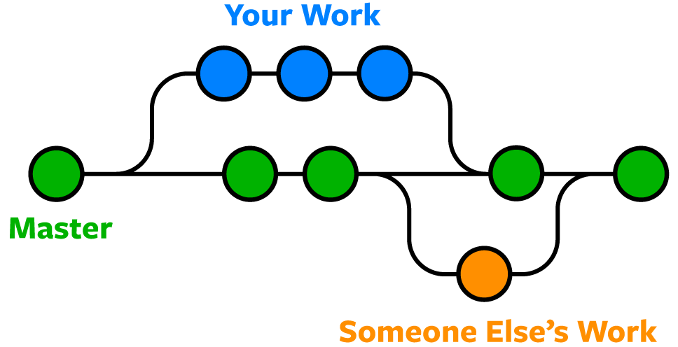

What is the purpose of a README file?
A README is the front page of a project. It explains what the project does, how to install and run it, and how others can contribute, so anyone opening the repository knows where to start.
Read moreA short introduction to three tools every developer uses: README files, wireframes and Git branches.

A README is the front page of a project. It explains what the project does, how to install and run it, and how others can contribute, so anyone opening the repository knows where to start.
Read more
A wireframe is a simple, low-detail sketch of a page layout. It lets designers and developers agree on structure and content placement before spending time on colours, fonts and code.
Read more
A branch is an independent line of development. You can try out new features or fixes on a branch without affecting the main code, then merge the changes back when they are ready.
Read more